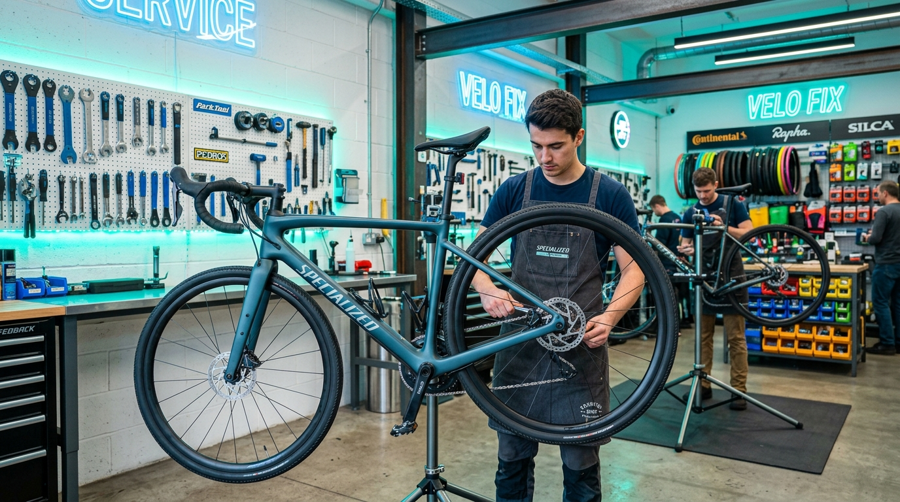
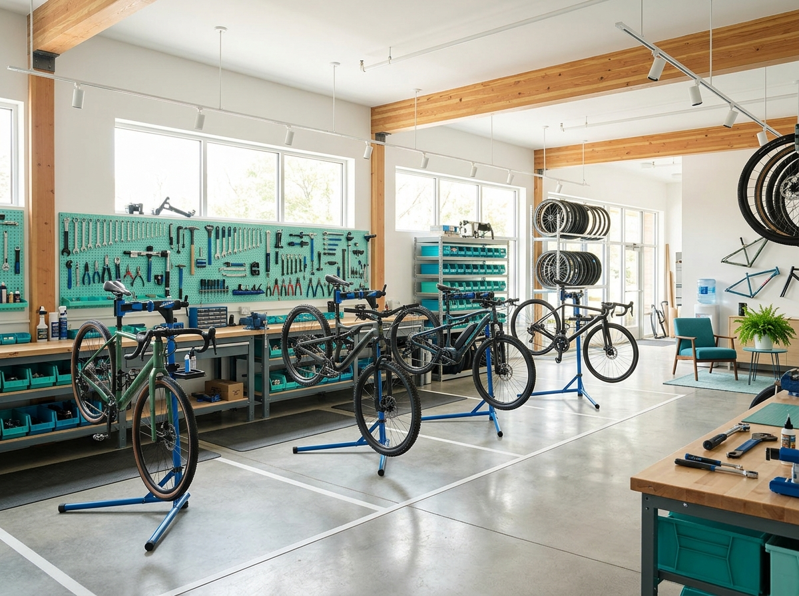

Na Bicicletaria do Grau 5.0, cada bicicleta recebe atenção e cuidado profissional. Da revisão preventiva ao ajuste fino, deixamos sua bike pronta para qualquer trajeto.


A Bicicletaria do Grau 5.0 é uma oficina especializada em manutenção e cuidados para bicicletas, localizada no Jardim Amalia, Zona Sul de São Paulo. Oferecemos atendimento próximo, com foco na qualidade do serviço e na satisfação de cada ciclista.
Desde revisões preventivas até ajustes de transmissão e freios, nossa equipe trabalha com atenção aos detalhes para que sua bike esteja sempre pronta, segura e com desempenho ideal.
Oferecemos serviços completos de manutenção e cuidados para todos os tipos de bicicletas.
Cuide da sua bike antes que o problema apareça. Revisão completa para manter tudo funcionando.
Freios em perfeito estado são essenciais. Garantimos sua segurança no pedal.
Marchas precisas e transmissão fluida para o melhor desempenho no seu pedal.
Rodas alinhadas e pneus calibrados são a base de uma pedalada confortável e segura.
Bike nova ou precisa de ajustes ergonômicos? Montamos e configuramos para o seu conforto.
Uma bike limpa dura mais e funciona melhor. Cuidamos de cada detalhe para você.
Motivos que fazem nossos clientes voltarem sempre.
Cada bicicleta é tratada com atenção e respeito. Entendemos o valor da sua companheira de pedal.
Gostamos de conversar, entender suas necessidades e orientar sobre os melhores cuidados.
Solicite seu orçamento pelo WhatsApp, de forma rápida, sem burocracia e sem compromisso.
Inspecionamos cada componente com cuidado. Nenhum detalhe passa despercebido.
Compartilhamos dicas de conservação e manutenção para que sua bike dure mais.
Cada bike é única. Avaliamos e recomendamos a melhor solução para o seu caso.
Espaço reservado para avaliações reais dos nossos clientes.
"Exemplo de depoimento — este espaço será preenchido com avaliações reais de clientes da Bicicletaria do Grau 5.0."
"Exemplo de depoimento — este espaço será preenchido com avaliações reais de clientes da Bicicletaria do Grau 5.0."
"Exemplo de depoimento — este espaço será preenchido com avaliações reais de clientes da Bicicletaria do Grau 5.0."
* Os depoimentos acima são exemplos ilustrativos. Este espaço será atualizado com avaliações reais dos clientes.
Preencha o formulário com os dados da sua bicicleta e o serviço desejado. Ao enviar, uma mensagem será preparada automaticamente para o nosso WhatsApp. Você poderá revisá-la antes de confirmar o envio.
Reunimos as principais dúvidas para facilitar sua experiência.
Estamos no Jardim Amalia, Zona Sul de São Paulo. Fale conosco e saiba como chegar.
(11) 96550-4747
R. Serra dos Dois Irmãos, 475
Jardim Amalia, São Paulo - SP
CEP 05890-300
Entre em contato pelo WhatsApp para confirmar o horário de atendimento.